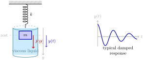
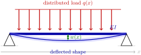

Two classical engineering models immediately lead to higher-order linear ODEs with constant coefficients.
-
Harmonic oscillator (mass-spring-damper). A mass \(m\) attached to a spring of stiffness \(k\) and a damper of coefficient \(\alpha\) satisfies\begin{equation*} m\, y''(t) + \alpha\, y'(t) + k\, y(t) = F(t), \end{equation*}where \(y(t)\) is the displacement from rest and \(F(t)\) is an external force. This is a second-order linear ODE with constant coefficients.
-
Elastic beam bending. Under a distributed transverse load \(q(x)\text{,}\) the deflection \(w(x)\) of a homogeneous beam with bending stiffness \(EI\) satisfies\begin{equation*} E\, I\, w''''(x) = q(x). \end{equation*}This is a fourth-order linear ODE.


Both examples share the structural feature we will exploit: the unknown function and all its derivatives appear only linearly, and the coefficients are constant.